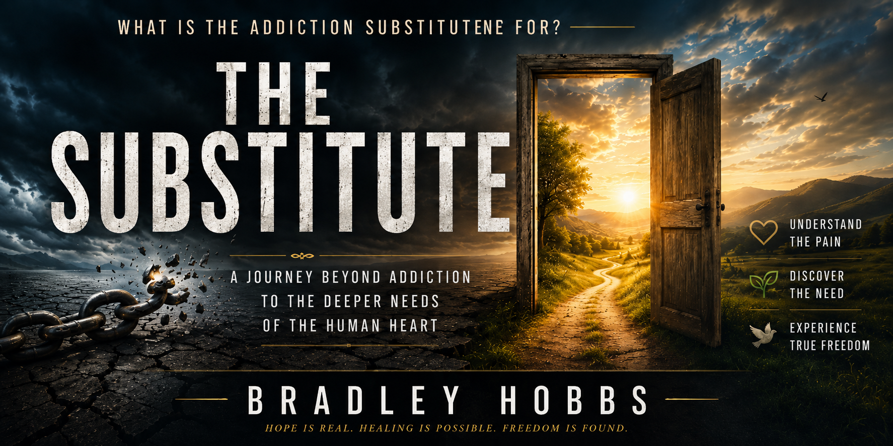

Welcome, and thank you for visiting. My name is Bradley Hobbs, and I write to encourage people to know Jesus Christ more deeply through His Word. Every book begins with Scripture and grows from a desire to share God's grace, truth, hope, and faithfulness with readers from every walk of life.
Whether I am writing about healing, forgiveness, worship, church life, spiritual growth, identity, family, or redemption, my prayer remains the same: that every page points beyond itself to Jesus Christ. I want readers to leave each book with a greater love for God's Word and a deeper confidence in His promises.
My books explore real questions, real struggles, and the transforming power of God's grace. Some are inspired by biblical accounts, while others examine challenges believers face today. Together they reflect one purpose: proclaiming Christ through biblical truth and encouraging faith through Scripture.
Thank you for taking the time to explore my work. Whether this is your first visit or you have been reading for years, I hope these books strengthen your faith, deepen your understanding of God's Word, and remind you that Jesus Christ is still changing lives today.
⭐ Featured New Release
Who Made You Judge?
Rediscovering Truth Without Condemnation
Who Made You Judge? invites readers to take an honest look at one of the most challenging questions Jesus ever asked. Rather than encouraging condemnation or silence, this book explores how truth and mercy meet in the life and ministry of Christ, calling believers to examine their own hearts before speaking into the lives of others.
Through Scripture, thoughtful reflection, and practical application, readers are encouraged to pursue conviction without pride, grace without compromise, and love without abandoning biblical truth. Every chapter points back to the example of Jesus Christ, who perfectly demonstrated both truth and compassion.
"Who made you judge?" is more than a question. It is an invitation to let Jesus examine our hearts before we examine someone else's.
Discover Who Made You Judge?, a book that explores judgment, mercy, grace, and biblical truth through the teachings of Jesus Christ.
Continue the Story
Continue your journey with Who Gave You Authority?, the sequel to Who Made You Judge?, as it explores biblical authority, servant leadership, and the responsibility that accompanies God's calling.
A Personal Welcome
Thank you for stopping by. Whether you came looking for a specific title or simply discovered this website along the way, I hope you leave encouraged. My prayer is that every book points beyond its pages to the One who changes lives, Jesus Christ.
Featured Novel

The Substitute is a Christian novel exploring redemption, brokenness, forgiveness, and the hope found in Jesus Christ.
Featured Novel
The Substitute
What begins as a story about addiction soon becomes something much deeper. The Substitute follows lives marked by brokenness, shame, and difficult choices, revealing that behind every struggle is a heart longing to be seen, loved, and restored. Through every chapter, the hope of Jesus Christ shines brighter than failure.
With unforgettable characters and honest storytelling, this novel reminds readers that redemption is never beyond God's reach and that grace has the power to transform even the darkest chapters of life.
"Sometimes addiction is not the problem.
Sometimes addiction is the substitute."
The journey continues beyond The Substitute. This Christian fiction series follows lives shaped by addiction, recovery, forgiveness, family, faith, healing, and redemption as each story reveals the transforming hope found in Jesus Christ. Every novel builds upon the last while exploring the difficult realities many people face and the grace that leads toward restoration.
The Substitute II
Healing rarely happens all at once. As old wounds resurface and unexpected relationships develop, the journey continues through addiction recovery, forgiveness, redemption, family restoration, emotional healing, and discovering that the grace of Jesus always reaches farther than failure.
Recovery eventually becomes something greater than survival. Follow the next chapter as broken lives discover purpose, restoration, discipleship, forgiveness, faith, hope, and a future transformed through the redeeming power of Jesus Christ.
Every book begins with a burden on my heart, a passage of Scripture, or a story that refuses to let go. Together they explore faith, hope, healing, redemption, truth, and the transforming work of Jesus Christ. Whether you are discovering my writing for the first time or returning to explore another title, I hope you find a book that encourages your faith and points you toward God's Word.
Each title reflects a different journey, yet they all share the same purpose: to proclaim Jesus Christ through biblical truth. From thoughtful reflections on Scripture to stories of grace and redemption, this growing collection is written to strengthen faith and encourage believers in every season of life.
Kept Released Covenant
An exploration of God's unchanging covenant and the faithfulness that carries His people through every generation.
Every book begins with prayer, Scripture, and a desire to point people toward Jesus Christ. Whether exploring biblical truth, sharing stories of redemption, or addressing the questions many believers quietly carry, my goal is always the same: to encourage faith through God's Word.
Scripture First
The Bible is the foundation of every book I write. My desire is not to offer opinions but to encourage readers to discover the truth, hope, and wisdom found in God's Word.
Real Life. Real Hope.
Life brings questions, struggles, victories, and seasons of waiting. My writing seeks to meet readers where they are while reminding them that God's grace remains faithful through every chapter of life.
A Growing Library
New books continue to be added as the Lord opens new opportunities to write. My prayer is that every title becomes another invitation to know Jesus Christ more deeply and to trust Him more fully.
Explore the Library
Every book begins with a question, a burden, or a passage of Scripture that refused to let go. Some tell stories of redemption. Others examine biblical truth, explore difficult questions, or encourage believers through seasons of healing, hope, and spiritual growth. Together they represent one continuing journey of pointing readers to Jesus Christ.
Browse the growing library below and discover the books that speak to where you are today. Whether you are searching for hope, biblical truth, restoration, encouragement, or simply your next read, I pray each book strengthens your faith and points you toward Christ.
Each collection represents a different theme found throughout my writing. Explore the titles below and discover stories, biblical reflections, and messages of hope written to encourage faith and deepen your walk with Jesus Christ.
Healing & Restoration
Christian books about healing, recovery, grief, emotional restoration, church hurt, hope, and finding lasting peace through Jesus Christ.
▾
The Price of a Promise
A Christian memoir exploring romance scams, financial loss, forgiveness, emotional healing, restoration, faith, and trusting God after broken promises.
A Christian encouragement for those who feel unseen, forgotten, overlooked, or abandoned, reminding readers they remain fully known and deeply loved by Jesus.
Bible studies, devotionals, discipleship resources, Christian living books, and spiritual growth resources centered on Jesus Christ.
▾
Born of Spirit and Truth
A Scripture centered Bible study exploring discipleship, spiritual growth, biblical truth, the new birth, faith, and walking daily with Jesus Christ through the power of the Holy Spirit.
Discover how biblical faith grows through unseen seasons, answered prayer, perseverance, hope, trust in God, and learning to recognize the hand of Jesus before circumstances change.
A Christian discipleship book encouraging believers to move beyond spiritual infancy toward biblical maturity, deeper faith, obedience, wisdom, and a stronger relationship with Jesus Christ.
A Christian living book exploring faith in action, serving others, compassion, discipleship, biblical love, and discovering Jesus through everyday relationships.
A Bible study about Christian unity, biblical truth, church harmony, discipleship, encouragement, and speaking with one voice centered on Jesus Christ.
Bible studies exploring Apostolic doctrine, biblical theology, the identity of Jesus Christ, Scripture, discipleship, holiness, and the teachings of the early church.
▾
Beyond the Labels:
Becoming Who God Says You Are
A Bible study on Christian identity, redemption, grace, holiness, purpose, biblical truth, and discovering who God says you are through Jesus Christ.
A biblical study on holiness, grace, church healing, legalism, discipleship, truth, and learning to reflect the heart of Jesus instead of religious performance.
A devotional for believers healing from church hurt while rediscovering hope, biblical truth, spiritual restoration, grace, and the voice of Jesus Christ.
Christian fiction inspired by Scripture, biblical imagination, redemption, hope, sacrifice, worship, faith, and the transforming presence of Jesus Christ.
▾
The Fragrance
Inspired by the woman who anointed Jesus, this biblical fiction story explores worship, surrender, sacrifice, devotion, grace, and offering our lives completely to Christ.
A Christian allegorical novel about hidden rooms of the heart, spiritual renewal, healing, redemption, hospitality, and welcoming Jesus into every area of life.
Christian family books, inspirational stories for young readers, faith based fiction, biblical values, courage, kindness, wisdom, and growing in Jesus.
▾
Dallas and the Road Back to Life
A Christian story about addiction recovery, redemption, hope, forgiveness, second chances, healing, and discovering new life through Jesus Christ.
A Christian book for families and young readers exploring wisdom, healthy boundaries, kindness, courage, biblical decision making, and honoring God through everyday choices.
Explore Christian ministry websites, web design, teaching resources, Bible education, storytelling projects, and creative work by Bradley Hobbs.
▾
Brad Hobbs Web Portfolio
View professional website design, Christian ministry websites, author platforms, educational projects, digital storytelling, and creative web development by Bradley Hobbs.
Discover upcoming Christian books, Bible studies, Apostolic resources, devotionals, discipleship materials, and ministry projects currently being developed by Bradley Hobbs.
A Foundation Before the Shout
A Christian discipleship book exploring spiritual maturity, biblical foundations, endurance, faith, worship, and building a life firmly rooted in Jesus Christ.
An Apostolic Bible study exploring the Holy Spirit, Pentecost, holiness, discipleship, biblical truth, and living every day under the leadership of Jesus Christ.
Every Christian book, Bible study, devotional, article, ministry resource, and website created by Bradley Hobbs is made available so readers around the world can grow in their faith, discover biblical truth, and deepen their relationship with Jesus Christ. Each project represents countless hours of prayer, Bible study, writing, editing, research, design, and web development.
If these books have encouraged your walk with God, strengthened your understanding of Scripture, or helped you find hope, healing, restoration, or spiritual growth, your support helps make future Christian books, Bible studies, discipleship resources, and ministry projects possible.
Every contribution helps support future Christian writing, Bible studies, Apostolic teaching resources, ministry websites, educational projects, devotionals, and faith based books that remain freely available to readers worldwide.
Prayer is deeply appreciated, and suggestions for future Christian books, Bible study topics, devotionals, memoirs, and ministry resources are always welcome.